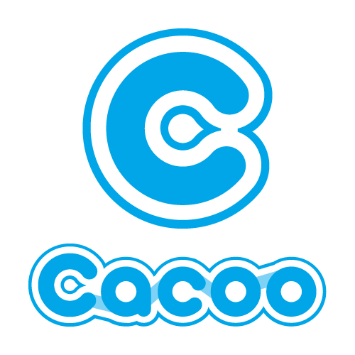
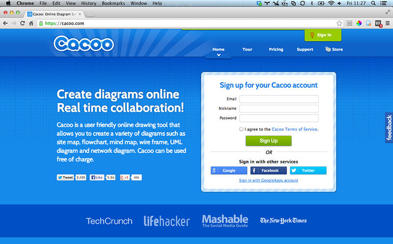

Cacoo
Create Together

What is Cacoo?
Cacoo is a user friendly online drawing tool that allows you to create a variety of diagrams such as site map, flowchart, mind map, wire frame, UML diagram and network diagram. Cacoo can be used free of charge.
First Steps
- Go to Cacoo.
- Login with Google, Facebook, or Twitter, or create a new account with your email address.
Features
- Easily create a diagram for wireframes, etc.
- Stencils available to help you create.
- Automatically align objects.
- Multiple sheets on diagrams.
- You can view the history of your diagram history.
- Connect objects with automatically bending connectors.
- Diagrams can be embedded in a Blog or Wiki in PNG format.
- Diagrams can be exported in vector formats - PDF, SVG, etc.
- Share or allow others to edit your diagram.
- Shared members can communicate.
- Real time collaboration.
- Chat with your collaborators.
How to share
- Go to your diagram that you want to share.
- In the modal window, click "Input email address to invite."
- Add other email addresses to the list if you need.
- Type an invitation message in the text box below the email box.
- Click the invite button to complete the invite.